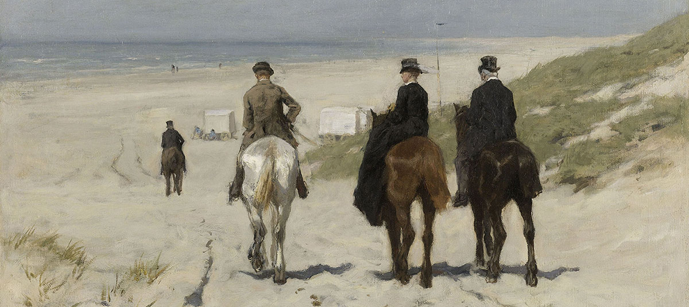

Morning Ride Along the Beach
By Anton Mauve | 1876 | Oil on Canvas
Hague School painters were drawn to the harsh existence of poor fishermen, like those living in nearby Scheveningen. Here, however, Mauve depicted the other side of that fishing village: the sunny world of the well-to-do bourgeoisie.
The blond and blue colour scheme effectively conveys the briny atmosphere of a summer day along the seashore.
Three riders descend to the beach, where the bathing cabins stand ready for swimmers. The blond and blue colour scheme effectively conveys the briny atmosphere of a summer day along the seashore.